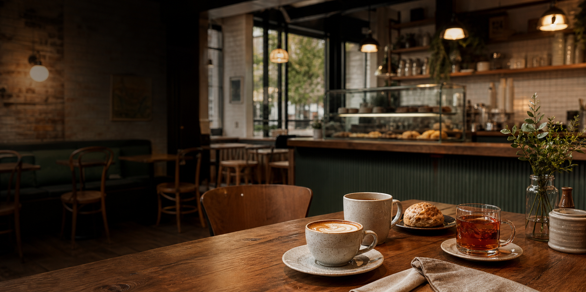

126 W Main St / Durham, NC
The Oak House Durham
Downtown coffee, tea, pastries, Wi-Fi, and evening hours in a warm cafe made for lingering.
Rating
4.5 / 5
134 Yelp reviews
Open Today
Closes 9 PM
Extended cafe hours
Known For
Coffee / Tea / Pastries
Plenty of seating and Wi-Fi
Cafe by day, social spot by night
A relaxed downtown Durham stop for coffee, tea, and conversation.
Guests call out the ample seating, tea options, lavender latte, butterfly pea lemonade, pastries, and the convenience of a cafe that stays open later than most.
Read guest reviews